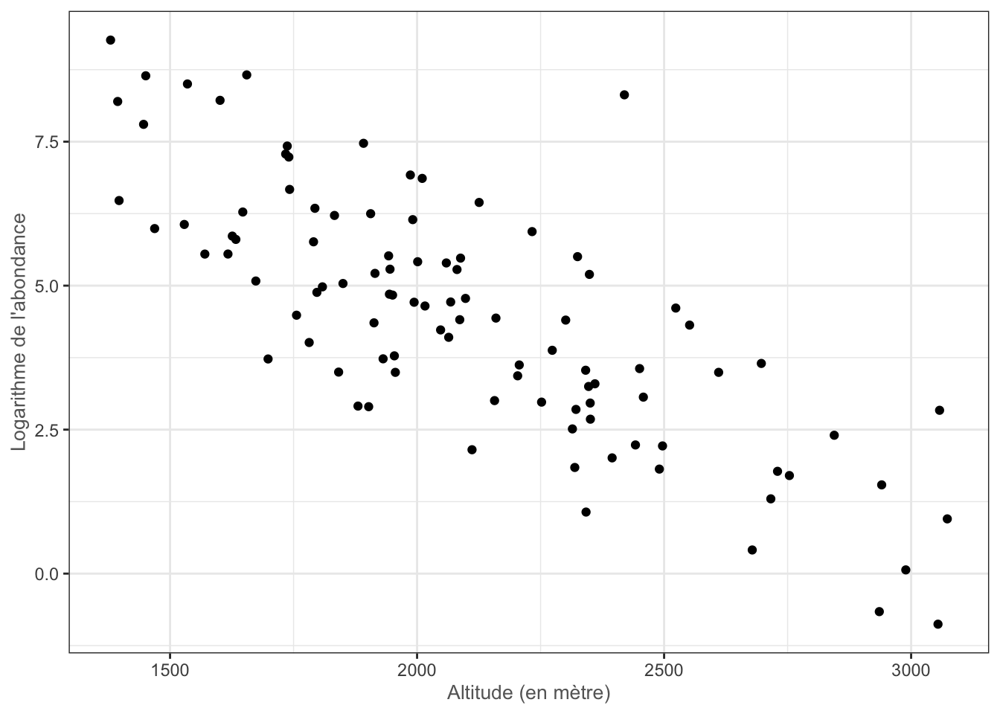
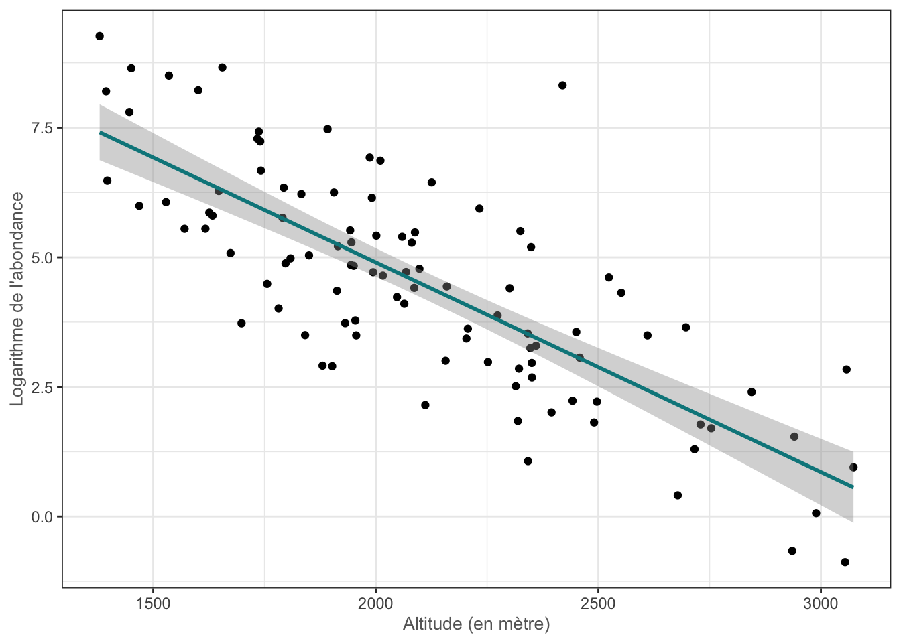
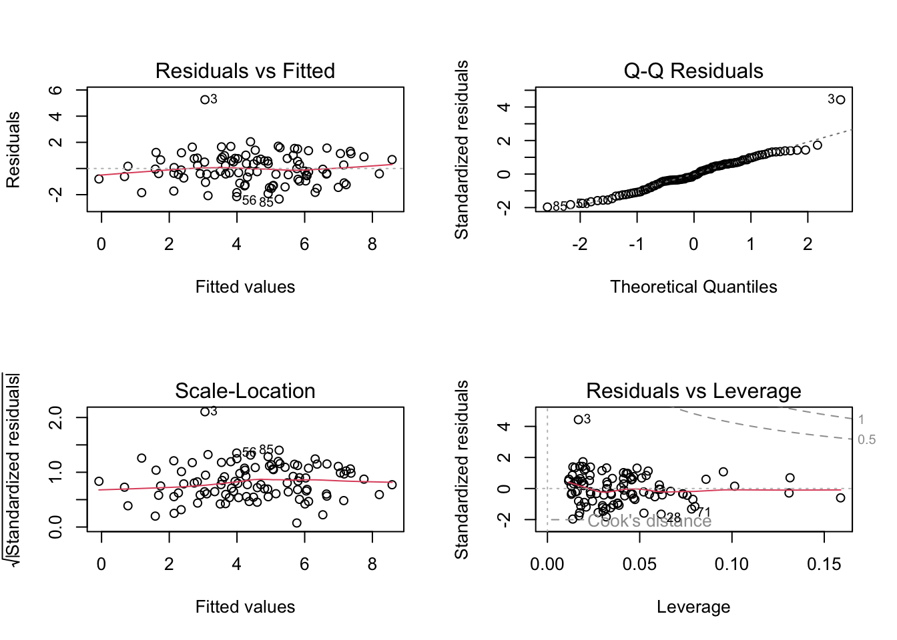
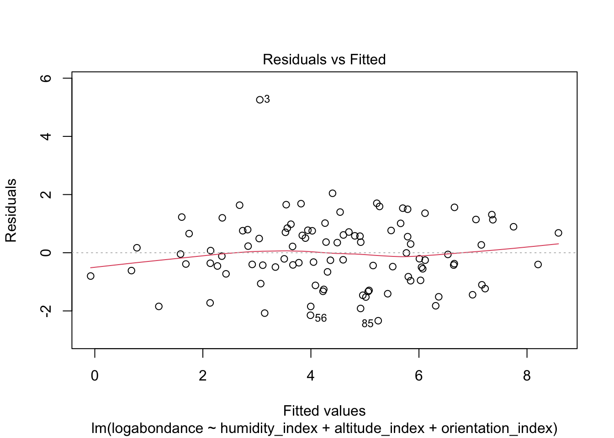
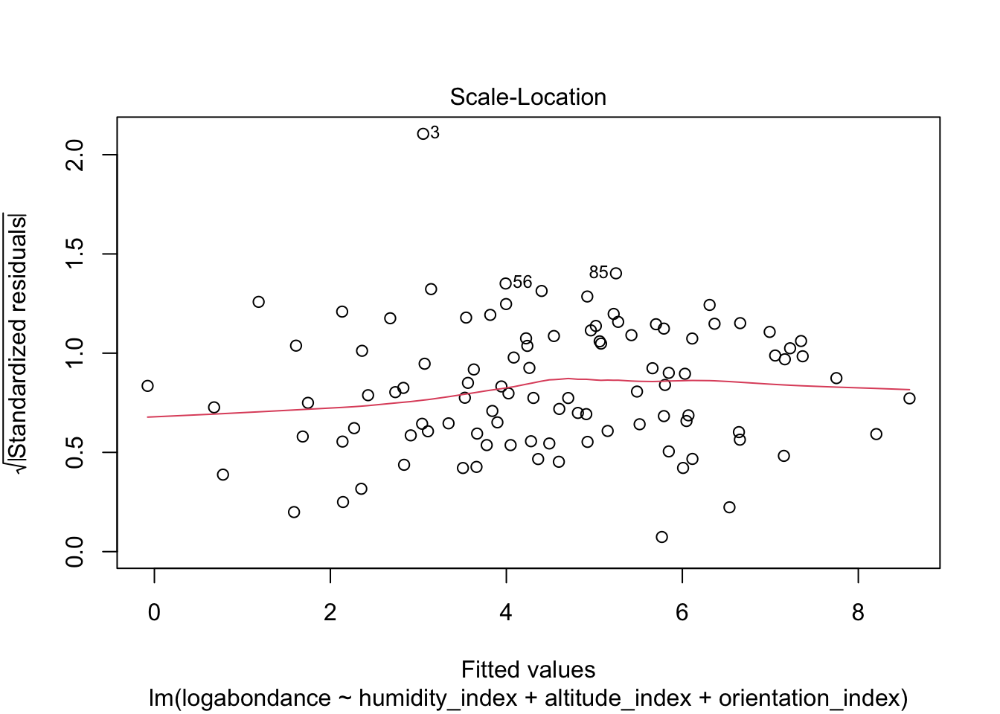
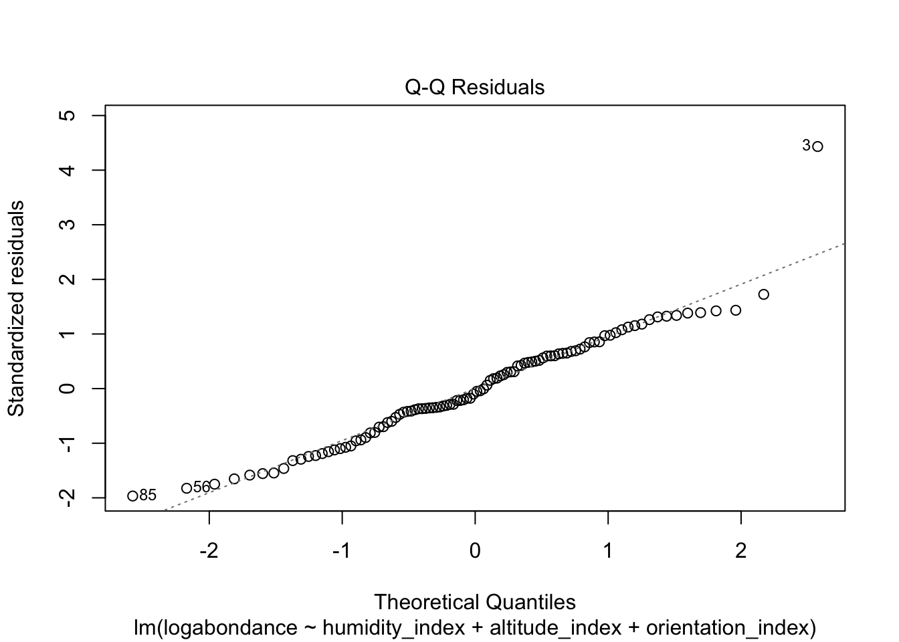

Ce chapitre est très largement inspiré, et pour tout une partie reprise du cours Modèle linéaire gaussien de Sophie Donnet. Il peut être retrouvé sur son site internet.
Préliminaires
Chargement des packages
Nous débutons en chargeant un ensemble de paquets pour la manipulation de données et des représentations graphiques.
Afficher le code
if (!require(tidyverse)) install.packages("tidyverse")if (!require(knitr)) install.packages("knitr")if (!require(corrplot)) install.packages("corrplot")if (!require(GGally)) install.packages("GGally")library(tidyverse) # manipulation et visualisation avancees de donneeslibrary(knitr) # Export et format de notebook R library(corrplot) # Graphiques de matriceslibrary(GGally) # Extension de ggplot2 facile d'utilisationtheme_set(theme_bw()) # theme noir et blanc par defaut de ggplot2
Contexte & Description des données
Le papillon Apollon de l’espèce Parnassius apollo est une espèce emblématique des milieux montagnards, inscrite sur la liste rouge des espèces menacées en France avec le statut vulnérable. Il affectionne les pelouses rocailleuses, éboulis et prairies sèches d’altitude, où pousse sa plante-hôte, l’orpin Sedum sp., dont se nourrit exclusivement sa chenille. L’Apollon est particulièrement sensible aux conditions microclimatiques locales (ensolleillement, humidité du sol, etc.) ainsi qu’aux pratiques de gestion du milieu notamment le pastoralisme, qui influence l’ouverture des pelouses et donc la disponibilité en plante-hôte.
Dans le cadre d’un suivi de population mené dans le Parc National de la Vanoise, 100 sites d’observations ont été échantillonnés le long de transects, répartis sur quatre secteurs du massif. Pour chaque site, plusieurs variables environnementales ont été mesurées, ainsi que l’abondance (logarithmique) du papillon.
Le jeu de données apollo (au format .Rdata) possède 100 lignes et 6 colonnes, dont :
humidity_index : indice d’humidité du sol local du site. Des valeurs faibles correspondent à des milieux secs, favorables à l’espèce ; des valeurs élevées à des milieux humides, généralement moins favorables ;
altitude_index : indice d’altitude du site d’observation ;
orientation_index : indice d’expositation du site. Les valeurs élevées correspondent à des versants bien exposés et ensolleilés ;
logabundance : logarithme de l’abondance du papillon Apollon dénombrée par transect sur chaque type ;
sector : secteur géographique du site d’observation au sein du Parc National de la Vanoise ;
grazing : mode de gestion du site : grazed pour un site pâturé, alpage exploité ; ou ungrazed pour un site non-paturé, en évolution naturelle.
Ce jeu de données permet d’étudier comment les conditions environnementales et les pratiques de gestion influencent l’abondance du papillon Apollon dans le Parc national de la Vanoise, dans une perspective de conservation d’une espèce menacée.
humidity_index altitude_index orientation_index logabondance.V1
Min. : 7.805 Min. :1380 Min. :-2.7783 Min. :-0.878076002828
1st Qu.:10.731 1st Qu.:1796 1st Qu.: 0.3390 1st Qu.: 2.997486496010
Median :11.195 Median :2053 Median : 0.8655 Median : 4.548821705460
Mean :11.236 Mean :2102 Mean : 0.8632 Mean : 4.488913669260
3rd Qu.:11.937 3rd Qu.:2349 3rd Qu.: 1.4746 3rd Qu.: 5.879824885520
Max. :13.350 Max. :3073 Max. : 4.2412 Max. : 9.264007023730
sector grazing
HauteMaurienne :28 ungrazed:54
HauteTarentaise:24 grazed :46
Pralognan :26
Champagny :22
1 Visualisation d’une relation linéaire
1.1 Visualisation
Commençons par une représentation graphique du nuage de points du logarithme de l’abondance du papillon Apollon en fonction de l’altitude du site d’observation.
Afficher le code
ggplot(apollo) +geom_point(aes(x = altitude_index,y = logabondance )) +labs(x ="Altitude (en mètre)",y ="Logarithme de l'abondance" ) +theme(axis.title =element_text(size =10,color ="grey40") )

Nous pouvons remarquer une relation linéaire entre les deux variables : lorsque l’altitude augmente, il semble que l’abondance du papillon diminue (de manière linéaire).
1.2 Modèle de régression linéaire simple
Nous donnons le code R permettant d’effecuter une régression linéaire simple et d’obtenir les graphiques du cours. Nous renvoyons au TD 1 pour une introduction exhaustive à ce modèle.
Call:
lm(formula = logabondance ~ altitude_index, data = apollo)
Residuals:
Min 1Q Median 3Q Max
-2.4757 -0.8852 -0.1511 0.8639 5.1083
Coefficients:
Estimate Std. Error t value Pr(>|t|)
(Intercept) 12.986199 0.700314 18.54 <2e-16 ***
altitude_index -0.004043 0.000327 -12.36 <2e-16 ***
---
Signif. codes: 0 '***' 0.001 '**' 0.01 '*' 0.05 '.' 0.1 ' ' 1
Residual standard error: 1.342 on 98 degrees of freedom
Multiple R-squared: 0.6093, Adjusted R-squared: 0.6053
F-statistic: 152.8 on 1 and 98 DF, p-value: < 2.2e-16
Afficher le code
ggplot( apollo,aes(x = altitude_index, y = logabondance) ) +geom_point() +# Droite de regression avec l'erreur standardgeom_smooth(method = lm, formula = y ~ x,se =TRUE, color ='turquoise4' ) +labs(x ="Altitude (en mètre)",y ="Logarithme de l'abondance" ) +theme(axis.title =element_text(size =10,color ="grey40") )

2 Modèle de régression linéaire multiple
La modélisation précédente reste simpliste. En effet, d’autres variables sont susceptibles d’avoir une influence sur la variable d’abondance comme par exemple l’humidité, l’altitude ou l’exposition (ou orientation) du site d’observation. Pour analyser la relation entre l’abondance, l’altitude et l’exposition d’un site d’observatoin, nous cherchons une fonciton \(f:\mathbb{R}\to\mathbb{R}\) telle que : \[ \texttt{logabondance} \quad \approx \quad f\big( \: \texttt{altitude} \, , \, \texttt{humidite} \, , \, \texttt{orientation} \: ) \, . \] Si on suppose que le lien est linéaire, alors on cherche \(f\) sous la forme : \[ f(x_1,x_2,x_3) \quad = \quad \beta_1x_1 \: + \: \beta_2x_2 \: + \: \beta_3x_3 \, . \] Cela revient donc à estimer les paramètres \(\beta_1\), \(\beta_2\) et \(\beta_3\).
2.1 Modélisation
Nous supposons que les données \(y_i\), de la variable d’intérêt, sont la réalisation de variables aléatoires \(\mathbf{Y}_i\) telles que : \[ \mathbf{Y}_i \quad = \quad \beta_1\, x_{i,1} \: + \: \beta_2 \, x_{i,2} \: + \: \dots \: + \: \beta_p \, x_{i,p} \: + \: {\boldsymbol\varepsilon}_i, \qquad \text{pour tout } i=1,\dots,n \] où
les \(x_i\) sont des nombres connus, déterministes (i.e. non aléatoires) ;
les paramètres \(\beta_j\) sont déterministes et inconnus ;
les variables \({\boldsymbol\varepsilon}_i\) sont des variables aléatoires i.i.d. de loi \(\mathcal{N}(0,\sigma^2))\) de variance \(\sigma^2\) inconnue.
Par simplification, nous avons supposé que \(f\) est linéaire. En réalité, la plupart du temps la fonction \(f\) recherchée est affine, c’est-à-dire de la forme : \[ f(x_1,\dots,x_p) \:\: = \:\: \beta_0 \: + \: \beta_1 x_1 \: + \: \dots \: + \: \beta_p x_p \, . \] À des fins de simplification, nous pouvons ré-écrire cette dernière égalité comme : \[ f(x_1,\dots,x_p) \:\: = \:\: \beta_0 x_0 \: + \: \beta_1 x_1 \: + \: \dots \: + \: \beta_p x_p \, , \] où nous avons introduit un vecteur \(x_0\) dont toutes les composantes sont égales à 1. Plus simplement (pour correspondre avec l’écriture matricielle de la partie suivante), nous écrirons : \[ \mathbf{Y}_i \quad = \quad \beta_1\, x_{i,1} \: + \: \beta_2 \, x_{i,2} \: + \: \dots \: + \: \beta_p \, x_{i,p} \: + \: {\boldsymbol\varepsilon}_i, \qquad \text{pour tout } i=1,\dots,n \] et considérer que la première variable est l’ordonnée à l’origine, c’est-à-dire la variable consante égale à 1, c’est-à-dire \(x_1 = \mathbf{1}_n = \begin{pmatrix}1 \\ \vdots \\ 1\end{pmatrix}\).
Avec ces notations, le modèle précédent se ré-écrit alors : \[ \mathbf{Y} = X \, \beta \: + \: {\boldsymbol\varepsilon} \] où
\(X\), apelée matrice de design, est une matrice à \(n\) lignes et \(p+1\) colonnes contenant une première colonne égale à 1 et les mesures des variables dites explicatives ; et
Remarquons que comme \(X\) et \(\beta\) sont déterministes, \(\mathbf{Y}\) est un vecteur gaussien de loi \(\mathcal{N}(X\beta,\, \sigma^2 I_n)\).
Pour tout ce cours, nous supposons que la matrice de design \(X\) est de rang plein, c’est-à-dire que les variables explicatives (les colonnes de \(X\)) sont linéairement indépendantes. En effet, si une colonne est combinaison linéaire des autres, alors nous ne pourront pas distinguer les effets éventuels. Une conséquence immédiate de cette hypothèse est que \(p\) doit être inférieur à \(n\).
2.3 Ajustement du modèle linéaire sous R
Nous souhaitons expliqur l’abondance (logarithmique) par l’humidité, l’altitude et l’exposition d’un site d’observation. La fonction lm (linear model) permet d’ajuster le modèle linéaire.
Call:
lm(formula = logabondance ~ humidity_index + altitude_index +
orientation_index, data = apollo)
Residuals:
Min 1Q Median 3Q Max
-2.3368 -0.7446 -0.0876 0.7586 5.2587
Coefficients:
Estimate Std. Error t value Pr(>|t|)
(Intercept) 13.5439577 1.5234477 8.890 3.60e-14 ***
humidity_index 0.0106327 0.1182602 0.090 0.929
altitude_index -0.0041094 0.0002928 -14.034 < 2e-16 ***
orientation_index -0.6217292 0.1196374 -5.197 1.14e-06 ***
---
Signif. codes: 0 '***' 0.001 '**' 0.01 '*' 0.05 '.' 0.1 ' ' 1
Residual standard error: 1.197 on 96 degrees of freedom
Multiple R-squared: 0.6956, Adjusted R-squared: 0.6861
F-statistic: 73.11 on 3 and 96 DF, p-value: < 2.2e-16
On obtient entre autres un tableau Coefficients qui comporte pour chaque paramètre (chaque ligne) quatre colonnes :
Estimate : son estimation ;
Std. Error : son écart-type estimé ;
t value : la valeur observée de la statistique du test d’hypothèse \((\mathcal{H}_0) : \beta_i = 0\) contre \((\mathcal{H}_1) : \beta_i \ne 0\) ; et
Pr(>|t|) : pour la statistique de test sous \((\mathcal{H}_0)\), la probabilité de dépasser la valeur estimée.
3 Estimateur des moindres carrés
Comme pour la régression linéaire simple, nous cherchons directement parmi toutes les droites possibles \[ y \:\: = \:\: \beta_1x_1 \: + \: \dots \: + \: \beta_px_p \, , \] celle qui les la “plus proche” du nuage de points. Nous cherchons donc les coefficients \(\beta_1,\dots,\beta_p\) minimisant la distance entre les valeurs observées \(y_i\), et les valeurs prédites ou ajustées par la droite \(\beta_1x_{i,1}\:+\:\dots\:+\:\beta_px_{i,p}\). Il exsite de nombreuses distances : la distance de Manhattant (la somme des valeurs absolues), la norme euclidienne, la norme-\(p\), la norme-\(\infty\), etc.
Nous choisissons la norme euclidienne. L’estimation retenue pour \(\beta\) est donc celle des moindres carrés. Elle est l’unique solution du problème d’optimisation : \[ \hat{\beta} \quad = \quad \underset{\beta \, \in \, \mathbb{R}^{p}}{\mathrm{argmin}} \:\: \sum_{i=1}^n \Big( y_i - \sum_{j=1}^p \beta_j \, x_{i,j} \Big)^2 \, ,\] ce qui se ré-écrit matriciellement comme \[ \hat{\beta} \quad = \quad \underset{\beta \, \in \, \mathbb{R}^{p}}{\mathrm{argmin}} \:\: \Vert y - X \, \beta \Vert_2^2 \, ,\] où \(\Vert \cdot \Vert_2\) est la norme euclidienne.
À partir de la fonction lm, l’estimation de \(\beta\) est contenue dans coefficients.
Si la matrice de design\(X\) est de rang plein, il est possible de calculer explicitement ces estimations à partir de \(X\) : \[ \hat{\beta} \quad = \quad (X^T X)^{-1} \, X^T y \, . \]
Afficher le code
X <-as.matrix(apollo[1:3], nrow = n, ncol =3)X <-cbind(rep(1, n), X)XT <-t(X)y <- apollo[, 4]hat_beta <-solve(XT %*% X) %*% XT %*% y
On note dans la suite \(\hat{\boldsymbol\beta}\) l’estimateur des moindres carrés.
4 Validation du modèle linéaire : Analyse des résidus
Commençons par quelques notations :
les valeurs prédites ou ajustées par le modèle sont définis par : \[ \hat{y}_i \: = \: \sum_{j=1}^p \hat{\beta}_j \, x_{i,j} \: = \: x_i \, \hat{\beta} \:\: ; \]
les résidus estimés sont définis par : \[ \hat{e}_i \: = \: y_i - \hat{y}_i \:\: ; \]
les résidus sont les estimateurs des erreurs inconnues \(\hat {\boldsymbol\varepsilon}_i\), c’est-à-dire : \[ \hat{{\boldsymbol\varepsilon}}_i \: = \: \mathbf{Y}_i - \hat{\mathbf{Y}}_i \:\: . \]
Les résidus sont accessibles via la fonction resid.
Les tests, intervalles de confiance, prévisions que nous verrons dans les parties suivantes, ne sont valables que sous l’hypothèse que les observations sont la réalisation d’un modèle linéaire gaussien. Ce dernier requiert que les erreurs \({\boldsymbol\varepsilon}_1,\dots,{\boldsymbol\varepsilon}_n\) satisfassent les propriétés suivantes :
Puisque nous n’avons évidemment pas accès aux erreurs \({\boldsymbol\varepsilon}_i\), ces propriétés doivent être vérifiées sur le modèle ajusté. Elles peuvent l’être l’aide des graphiques suivants :
Afficher le code
par(mfrow =c(2,2))plot(reg_apollo)

4.1 Posulat [P3] : Indépendance
L’indépendance des données ne peut être assuré que par le protocole expérimental.
4.2 Postulat [P1] : Espérance nulle
Cette propriété revient à valider que la relation entre \(x\) et \(y\) est linéaire. Le graphe Residuals vs Fitted des résidus en fonction des données prédites (c’est-à-dire des points \((\hat{y}_i, \hat{e}_i)\)) (en haut à gauche du plot précédent) permet de le vérifier.
Si nous observons un nuage de points centré et aligné sans structure particulière, alors nous nous satisfaisons.
Si nous observons une structure particulière (croissance des résidus en fonction des données prédites par exemple ou autre), alors nous pourrons penser que le modèle n’est pas adapté aux données, qu’il manque une tendance dans le modèle.
Dans ce deuxième cas, plusieurs solutions sont possibles : transformer les données comme travailler avec le log des observations, ou le log des variables explicatives, etc.
Afficher le code
plot(reg_apollo, 1)

Il ne semble pas y avoir de wtrucutre particulière ici.
4.3 Postulat [P2] : Homoscédasticité des résidus
Les erreurs estimées \(\hat e_i\) ne sont pas de variance constante. Nous utilisons donc la version standardisée. Le graphe Scale-Location des résidus standardisés en fonction des données prédites (c’est-à-dire des points \((\hat{y}_i, \hat{r}_i)\), où \(r_i = \frac{\hat{e}_i}{\widehat{se}_i}\) avec \(se_i\) est l’écart-type estimé des \(\hat{e}_i\)) permet de le vérifier.
Si nous observons un nuage de points centré et aligné sans structure particulière, alors nous nous satisfaisons.
Si nous observons une structure particulière (croissance des résidus standardisés en fonction des données prédites par exemple ou autre), alors nous pourrons penser que le modèle n’est pas homoscédastique.
Afficher le code
plot(reg_apollo, 3)

Il ne semble pas y avoir de wtrucutre particulière ici.
4.4 Postula [P4] : Normalité des résidus
Le QQ-plot des résidus estimés permet de tester le caractère gaussien des résidus.
Si nous observons que les points sont alignés le long de la première bissectrice, alors nous nous satisfaisons.
Cependant, ce postulat [P4] n’est pas obligatoire car si le nombre d’observations \(n\) est grand, alors nous pouvons obtenir des propriétés asymptotiques des estimateurs et des tests considérés plus haut.
Afficher le code
plot(reg_apollo, 2)

Les quantiles des résidus estimés semblent bien correspondre aux quantiles théoriques de la loi normale.
4.5 Variance des résidus
La matrice de variance-covariance des résidus est \[ \Sigma_{\hat{\boldsymbol\varepsilon}} \quad = \quad \sigma^2 \: (I_n \:-\:P_{[X]}) \, . \] Cette matrice est dépendante du bruit \(\sigma^2\) inconnue.
Sous l’hypothèse d’un modèle linéaire gaussien, les résidus \(\hat{\boldsymbol\varepsilon}_i\) :
sont gaussiens, centrés, comme l’erreur \({\boldsymbol\varepsilon}_i\) ;
mais ils n’ont pas tous la même variance, et ne sont en général pas indépendant.
En revanche, une propriété importante est que \(\hat{\boldsymbol\varepsilon}\) et \(\hat{\mathbf{Y}}\) sont indépendants. Cette propriété nous permet de construire un estimateur naturel de \(\sigma^2\) dont on connait la loi. L’estimateur \[ \hat{\boldsymbol\sigma} \quad = \quad \frac{1}{n-p} \, \sum_{i=1}^n \hat{{\boldsymbol\varepsilon}}_i^2 \] est un estimateur sans biais de \(\sigma^2\). Plus précisément : \[ (n-p)\,\frac{\hat{\boldsymbol\sigma}^2}{\sigma^2} \quad \sim \quad \chi^2(n-p) \, , \] où \(\chi^2(n-p)\) est la loi du Khi-deux à \(n-p\)d.d.l.
En particulier, il est maintenant possible d’obtenir un estimateur de la variance des coefficients. Rappelons que \(\hat{\boldsymbol\beta}_j\) est de loi \(\mathcal{N}(\beta,\,\sigma^2(X^TX)^{-1}))\). En particulier, \[ \sigma^2_{\hat{\beta}_j} \:\: = \:\: \sigma^2 \: \big[(X^TX)^{-1}\big]_{jj} \qquad \textrm{et} \qquad \sigma_{\hat{\beta}_j ,\: \hat{\beta}_k} \:\: = \:\: \sigma^2 \: \big[(X^TX)^{-1}\big]_{jk} \, . \] Pour calculer ces quantités, il nous faut connaître la variance inconnue \(\sigma^2\), dont nous connaissons un estimateur sans biais. Alors un estimateur de la variance du coefficient \(\beta_j\) est donné par : \[ \hat{\boldsymbol\sigma}_{\hat{\beta}_j} \:\: = \:\: \hat{\boldsymbol\sigma}\, \big[(X^TX)^{-1}]_{jj} \, . \]
Une estimation de la variance \(\sigma^2\) est directement accessible depuis la sortie summary.
Afficher le code
summary(reg_apollo)$sigma^2
[1] 1.431722
Les écarts-types de chaque coefficient \(\hat{\beta}_j\) sont également directement accessible depuis la sortie summary, dans la colonne Std.Error du tableau Coefficients.
Une fois le modèle validé, une application intéressante consiste à prévoir les valeurs de l’abondance du papillon Apollon pour de nouveaux sites d’observation du Parc National de la Vanoise en mesurant l’altitude, l’humidité et l’exposition de ces nouveaux sites.
Nous avons une nouvelle donnée \(x_{n+1} = (x_{n+1,1},\, \dots,\, x_{n+1,p})\) correspondant à un \((n+1)\)-ème individu, et nous ne connaissons pas la valeur \(y_{n+1}\) correspondante.
Notons \(\hat{y}^p_{n+1}\) la valeur prédite (\(y_{n+1}\) étant la valeur réelle, inconnue, non mesurée). Nous n’observons que \(x_{n+1}\). Le modèle indique que : \[ \mathbf{Y}_{n+1} \quad = \quad \beta^T \, x_{n+1} \: + \: {\boldsymbol\varepsilon}_{n+1} \, , \] avec \({\boldsymbol\varepsilon}_{n+1}\sim\mathcal{N}(0, \,\sigma^2)\) et \({\boldsymbol\varepsilon}_{n+1}\) indépendant des \(({\boldsymbol\varepsilon}_{i})_{1\le i\le n}\).
La prédiction s’effectue alors grâce au modèle et à l’estimation \(\hat{\beta}\) obtenue précédemment : \[ \hat{y}_{n+1}^p \quad = \quad \hat{\beta}^T \, x_{n+1} \, . \]
Attention toutefois ! L’estimation utilisée \(\hat{\beta}\) est calculée avec les données initiales \((x_1,y_1), \dots, (x_{n},y_n)\) et pas avec \((x_{n+1},y_{n+1})\).
Par exemple, si nous voulons connaitre la valeur prédite par le modèle d’un nouveau site d’observation ayant un indice d’humidité de 13.2, à une altitude de 2857 mètres et un indice d’orientation de 1.17.
Une estimation est intéressante lorsqu’elle s’accompagne d’un intervalle de confiance. Grâce aux lois des estimateurs \(\hat{\boldsymbol\beta}_j\) et \(\hat{\boldsymbol\sigma}^2\), il n’est pas difficile de construire des intervalles de confiance pour les coefficients correspondants.
i- Un IC de niveau \(1-\alpha\) pour le coefficient \(\beta_j\) est donné par \[ \mathrm{IC}_{1-\alpha}(\beta_j) \:\: = \:\: \Big[ \, \hat{\boldsymbol\beta}_j \: \pm \: q^{St(n-p)}_{1-\alpha/2} \, \hat{\boldsymbol\sigma} \, \sqrt{[(X^TX)^{-1}]_{jj}} \, \Big] \, . \] i- Un IC de niveau \(1-\alpha\) pour le coefficient \(\beta_j\) est donné par \[ \mathrm{IC}_{1-\alpha}(\sigma^2) \:\: = \:\: \Bigg[ \, \frac{(n-p)\, \hat{\boldsymbol\sigma}^2}{q^{\chi^2(n-p)}_{1-\alpha/2}} \: , \: \frac{(n-p)\, \hat{\boldsymbol\sigma}^2}{q^{\chi^2(n-p)}_{\alpha/2}} \, \Bigg] \, . \]
La fonction confint permet d’obtenir les intervalles de confiance pour chacun des paramètres \(\beta_j\).
Comme précédemment, il existe des intervalles de confiance explicites pour les valeurs prédites : on les appelle intervalles de prédiction. Rappelons que \(x_{n+1} \in \mathbb{R}^p\) est un nouvel individu, et la valeur réelle \(y_{n+1}\) est inconnue.
Un IC de niveau \(1-\alpha\) pour une nouvelle valeur \(y_{n+1}\) est donné par \[ \mathrm{IC}_{1-\alpha}(y_{n+1}) \:\: = \:\: \Big[ \, x^T_{n+1} \, \hat{\boldsymbol\beta}_j \: \pm \: q^{St(n-p)}_{1-\alpha/2} \, \hat{\boldsymbol\sigma} \, \sqrt{x^T_{n+1} (X^TX)^{-1} x_{n+1} \, + \, 1} \, \Big] \, . \]
Donnons les intervalles de confiance pour la prévision de l’abondance du papillon Apollon sur deux nouveaux sites d’observation du Parc National de la Vanoise :
sur le premier site, les valeurs respectives de l’humidité, de l’altitude et de l’orientation sont 13.2, 2857, 1.17 ; et
sur le second site, elles sont de 91, 2032, 0.89.
Un intervalle de prédiction peut s’obtenir à partir de la fonction predict().
Nous posons ici la question de l’utilité d’une variable explicative. Par exemple, l’altitude d’un site influence-t-elle l’abondance du papillon Apollon ?
Nous souhaitons donc réaliser le test : \[ (\mathcal{H}_0) : \text{"la variable explicative n'est pas pertinente"} \qquad \text{contre} \qquad (\mathcal{H}_1) : \text{"la variable explicative est pertinente"} \, . \] Or dire que la variable est inutile revient à dire que son coefficient est nul. Nous sommes donc amener à réaliser le test suivant : \[ (\mathcal{H}_0) : \beta_j = 0 \qquad \text{contre} \qquad (\mathcal{H}_1) : \beta_j \ne 0 \, . \] Une variable explicative est considérée comme pertinente au seuil d’erreur de 1ère espèce \(\alpha\), si la \(p\)-valeur du test est \(<\alpha\).
Puisque que nous connaissons les lois des estimateurs \(\hat{\boldsymbol\beta}_j\) et \(\hat{\boldsymbol\sigma}^2\), il n’est pas difficile de construire (ou du moins se convaincre) le test suivant : nous rejetons l’hypothèse \((\mathcal{H}_0)\) au seuil de 1ère espèce \(\alpha\), si \[ \frac{|\hat{\boldsymbol\beta}_j|}{\displaystyle{\hat{\boldsymbol\sigma}\,\sqrt{\big[ (X^TX)^{-1}\big]_{jj}}}} \:\: > \:\: q^{St(n-p)}_{1-\alpha/2} \, . \]
Réalisons ce test pour le coefficient de l’humidité \(\beta_2\) au seuil de 1ère espèce de 7%.
Afficher le code
alpha <-0.07S <-abs(as.numeric(hat_beta[2,1])) /sqrt(as.numeric(diag(hat_sigma *solve(XT %*% X)))[2])q <-qt(p =1-alpha/2, df = n-p)ifelse(S>q, "Nous rejetons (H0)", "Nous ne rejetons pas (H0)")
[1] "Nous ne rejetons pas (H0)"
Dans le tableau Coefficients de la sortie summary :
la colonne t.valuerenvoie la valeur de la statistique de test ; et
la dernière colonne, Pr(|t|>t) renvoie la \(p\)-valeur du test.
Au risque d’erreur de 1ère espèce de 5%, les tests sont significatifs pour les variables altitude_indexet orientation_index : l’altitude et l’orientation du site influencent linéairement l’abondance du papillon Apollon.
7.2 Tests sur un groupe de coefficients
Nous pouvons également tester la pertinence d’un groupe de variables explicatives, c’est-à-dire tester la nullité de plusieurs coefficients : \[ (\mathcal{H}_0) : \forall j\in\{p-q+1, \dots, p\},\, \beta_j = 0 \qquad \text{contre} \qquad (\mathcal{H}_1):\exists j\in\{p-q+1,\dots,p\},\,\beta_j\ne0 \, . \] Sous \((\mathcal{H}_0)\), le modèle est en réalité : \[ \mathbf{Y}_i \:\: = \:\: \sum_{j=1}^{p-q} \beta_j \, x_{i,j} \: + \: {\boldsymbol\varepsilon}_i \, , \qquad i = 1,\dots,n \, . \] Autrement écrit, avec \(\tilde{\beta} = (\beta_1,\dots,\beta_{p-q})^T\), on a \[ \mathbf{Y} \:\: = \:\: X_0 \, \tilde{\beta} \: + \: {\boldsymbol\varepsilon} \] avec \(X_0 \in \mathcal{M}_{n\times(p-q)}\) = \(p-q\) premières colonnes de \(X\).
Notons :
\(\mathcal{M}_1\) : modèle complet avec toutes les variables explicatives ; et
\(\mathcal{M}_0\) : sous-modèle obtenu en enlevant les \(q\) dernières variables.
Le test écrit précédemment revient à comparer les deux modèles \(\mathcal{M}_0\) et \(\mathcal{M}_1\). Nous soupçonnons que le vrai modèle est le modèle \(\mathcal{M}_0\). Si \(\mathcal{M}_0\) est le bon modèle, alors nous collecterons moins de données en vue de la rpévision et nous estimerons mieux les paramètres. Remarquons néanmoins qu’un modèle plus riche s’ajustera mieux aux données. Mais ce gain d’ajustement “vaut-il le coup” ? Un modèle plus riche implique plus de paramètres à estimer, et donc plus d’incertitude.
Nous allons donc construire un test permettant de comparer deux modèles. Notons :
\(\mathrm{SCR}_0\) la variabilité expliquée par les variables explicatives contenues dans \(X_0\) (du modèle \(\mathcal{M}_0\)) : \[ \mathrm{SCR}_0 \:\:= \:\: \sum_{i=1}^n \big( \mathbf{Y}_i \: - \: \hat{\mathbf{Y}}^0_i \big)^2 \:\: = \:\: \Vert \mathbf{Y} \: - \: P_{[X_0]}\mathbf{Y} \Vert^2 \, ; \]
La matrice \(X_0\) étant une sous-partie des colonnes de la matrice de design \(X\), nous avons \([X_0] \subset [X]\). Ainsi donc \(\mathrm{SCR} \le \mathrm{SCR}_0\). Ainsi pour comparer les deux modèles \(\mathcal{M}_0\) et \(\mathcal{M}_1\), il nous suffit de construire un test sur la différence \(\mathrm{SCR} - \mathrm{SCR}_0\), et rejeter \((\mathcal{H}_0)\) si cette différence est significativement plus grande que 0. La statistique du test de Fisher repose sur cette différence et prend de plus en compte la taille des modèles en compétition : \[ F \:\: = \:\: \frac{\displaystyle{\frac{1}{q}} \, (\mathrm{SCR}_0-\mathrm{SCR})}{\displaystyle{\frac{1}{n-p}}\,\mathrm{SCR}} \, . \] Sous \((\mathcal{H}_0)\), nous avons que \(F \sim \mathcal{F}(q,\, n-p)\). On rejette donc l’hypothèse \((\mathcal{H}_0)\) au risque d’erreur de 1ère espèce \(\alpha\), si \(F > q^{\mathcal{F}(q, \, n-p)}_{1-\alpha}\), où \(q^{\mathcal{F}(q, \, n-p)}_{1-\alpha}\) est le quantile d’ordre \(1-\alpha\) d’une loi de Fisher à \((q, \, n-p)\)d.d.l.
Comparons les modèles complet (avec toutes les variables explicatives) et le modèle constitué seulement de la variable explicative altitude_index. Le test est le suivant : \[ (\mathcal{H}_0) : \beta_1 = \beta_3 = 0 \qquad \text{contre} \qquad (\mathcal{H}_1): \beta_1 \neq0 \: \text{ou} \: \beta_3 = 0 \, . \]
Analysis of Variance Table
Model 1: logabondance ~ altitude_index
Model 2: logabondance ~ humidity_index + altitude_index + orientation_index
Res.Df RSS Df Sum of Sq F Pr(>F)
1 98 176.40
2 96 137.44 2 38.95 13.602 6.293e-06 ***
---
Signif. codes: 0 '***' 0.001 '**' 0.01 '*' 0.05 '.' 0.1 ' ' 1
La \(p\)-valeur du test de Fisher est 6.293e-06 < 5% : au sueil d’erreur de 1ère espèce \(\alpha=5\%\), nous rejetons l’hypothèse \((\mathcal{H}_0)\), c’est-à-dire \(\beta_1\ne0\) ou \(\beta_3\ne0\).
7.3 Test du modèle
Un cas particulier du test précédent est de tester si l’ensemble des variables explicatives est pertinent ou autrement dit tester la pertinence du modèle complet. Il s’agit du test global de Fisher. En reprenant les notations précédentes, ici :
le modèle \(\mathcal{M}_1\) fait intervenir l’ensemble des vraiables ; et
le modèle \(\mathcal{M}_0\) ne fait intervenir que l’ordonnée à l’origine.
Puisqu’il s’agit d’un cas particulier du test précédent, la statistique de test et sa loi reste les mêmes : \[ F \:\: = \:\: \frac{\displaystyle{\frac{1}{p-1}} \, (\mathrm{SCR}_0-\mathrm{SCR})}{\displaystyle{\frac{1}{n-p}}\,\mathrm{SCR}} \:\: \overset{(\mathcal{H}_0)}{\sim} \:\: \mathcal{F}(p-1, \, n-p) \, . \] Nous rejetons l’hypothèse \((\mathcal{H}_0)\) au risque d’erreur de 1ère espèce \(\alpha\), si \(F > q^{\mathcal{F}(p-1,\,n-p)}_{1-\alpha}\).
Ce test est systématiquement réalisé par la fonction lm, dont le résultat apparait à la dernière ligne de la sortie summary.
Afficher le code
summary(reg_apollo)
Call:
lm(formula = logabondance ~ humidity_index + altitude_index +
orientation_index, data = apollo)
Residuals:
Min 1Q Median 3Q Max
-2.3368 -0.7446 -0.0876 0.7586 5.2587
Coefficients:
Estimate Std. Error t value Pr(>|t|)
(Intercept) 13.5439577 1.5234477 8.890 3.60e-14 ***
humidity_index 0.0106327 0.1182602 0.090 0.929
altitude_index -0.0041094 0.0002928 -14.034 < 2e-16 ***
orientation_index -0.6217292 0.1196374 -5.197 1.14e-06 ***
---
Signif. codes: 0 '***' 0.001 '**' 0.01 '*' 0.05 '.' 0.1 ' ' 1
Residual standard error: 1.197 on 96 degrees of freedom
Multiple R-squared: 0.6956, Adjusted R-squared: 0.6861
F-statistic: 73.11 on 3 and 96 DF, p-value: < 2.2e-16
La \(p\)-valeur est inférieure à 2.2e-16. Nous rejetons donc \((\mathcal{H}_0)\) au seuil d’erreur de 1ère espèce de 5% : au moins l’une des variables explicatives est pertinente.
8 Ajustement de modèle aux données
8.1 Coefficient de détermination
Comme pour une ANOVA à un facteur, pour “mesurer le degré d’ajustement du modèle aux données”, nous allons comparer la variabilité totale des données avec la variabilité expliquée par le modèle.
Notons \[ \mathrm{SCT} \:\: = \:\: \sum_{i=1}^n (y_i \: - \: \overline{y})^2 \] la variabilité totale des données.
Remarquons que \(\mathrm{SCT}\) est égal à \(\mathrm{SCR}_0\) pour le modèle \(\mathcal{M}_0\) ne faisant intervenir que l’ordonnée à l’origine. Ce dernier est défini sans covariable, c’est-à-dire par \(X^{(0)} = \mathbf{1}_n\), et pour celui-ci nous avons \(\hat{\beta_1} = \overline{y}\) et donc \(\hat{y}_i = \overline{y}\) pour tout \(i=1,\dots,n\).
D’après le théorème de Pythagore, nous pouvons décomposer la variabilité totale comme la somme de deux sources de variabilités distinctes :
\(\mathrm{SCM}\) : somme des carrés du modèle qui constitue un indicateur de variabilité expliquée par le modèle ; et
\(\mathrm{SCR}\) : somme des carrés résiduels qui consitute un indicateur de variabilité non-expliquée par le modèle ;
\[ \mathrm{SCT} \:\: = \:\: \underbrace{\sum_{i=1}^n (\hat{y}_i \:-\:\overline{y})^2}_{=\:\mathrm{SCM}} \: + \: \underbrace{\sum_{i=1}^n (y_i\:-\:\hat{y}_i)^2}_{=\:\mathrm{SCR}} \, . \] Plus \(\mathrm{SCM}\) est grande par rapport à \(\mathrm{SCT}\), plus le modèle explique la variabilité des observations.
L’indicateur mesurant l’ajustement du modèle aux données est le coefficient de détermination défini par : \[ R^2 \:\: = \frac{\mathrm{SCM}}{\mathrm{SCT}} \:\: = \:\: 1 \: - \: \frac{\mathrm{SCR}}{\mathrm{SCT}} \, . \] Il peut également être utilisé (avec prudence) pour comparer les performances entre deux modèles.
Remarquons que \(0 \le R^2 \le 1\). Si \(R^2\) n’est pas assez proche de 1, alors cela signifie que le modèle n’approche pas bien la variable \(y\) :
il peut manquer une ou plusieurs variables explicatives qu’il faudrait introduire dans le modèle ; ou
l’une ou plusieurs des variables explicatives n’interviennent pas de manière liénaire.
Afficher le code
summary(reg_apollo)$r.squared
[1] 0.6955704
8.2 Coefficient de détermination ajusté
Cependant, le coefficient de détermination possède des limites. Il ne peut pas être utilisé pour sélectionner les covariables pertinentes. En effet, si \(X_q\) dénote la matrice composée des \(q\) premières colonnes de \(X\), alors on a \[ \mathrm{SCR}_{q+1} \:\: \leq \:\: \mathrm{SCR}_q \, . \] Par conséquent, la fonction \(q\longmapsto R^2_q\), où \(R^2_q\) est le coefficient de détermination du sous-modèle associé à \(X_q\), est croissante. Ainsi le \(R^2\) augmente quelque soit la variable incluse. Par exemple, dans le jeu de données apollo, si nous ajoutons la variable “nombre de panneaux de randonnées”, nous ajusterons mieux les observations alors que la covariable n’a aucun caractère explicatif du phénomène écologique étudié.
De plus, le \(R^2\) ne peut pas être utilisé tel quel pour la comparaison de modèles de tailles différentes ou pour la sélection de variables pertinentes. Cependant, il peut être intéressant pour comparer des modèles de même dimension.
Pour ces raisons, nous définissons le coefficient de détermination ajusté comme une modification du \(R^2\) qui tient compte du nombre de variables : \[ R^2_a \:\: = \:\: 1 \: - \: \frac{n-1}{n-p} \, \frac{\mathrm{SCR}}{\mathrm{SCT}} \, . \] Le \(R^2_a\) est donc une valeur amoindrie du \(R^2\) : la valeur du \(R^2\) est d’autant abaissée que le nombre \(p\) de variables explicatives du modèle est grand.
Ce nouveau coefficient est également donné par la sortie summary à la ligne Adjusted R-squared.
Afficher le code
summary(reg_apollo)
Call:
lm(formula = logabondance ~ humidity_index + altitude_index +
orientation_index, data = apollo)
Residuals:
Min 1Q Median 3Q Max
-2.3368 -0.7446 -0.0876 0.7586 5.2587
Coefficients:
Estimate Std. Error t value Pr(>|t|)
(Intercept) 13.5439577 1.5234477 8.890 3.60e-14 ***
humidity_index 0.0106327 0.1182602 0.090 0.929
altitude_index -0.0041094 0.0002928 -14.034 < 2e-16 ***
orientation_index -0.6217292 0.1196374 -5.197 1.14e-06 ***
---
Signif. codes: 0 '***' 0.001 '**' 0.01 '*' 0.05 '.' 0.1 ' ' 1
Residual standard error: 1.197 on 96 degrees of freedom
Multiple R-squared: 0.6956, Adjusted R-squared: 0.6861
F-statistic: 73.11 on 3 and 96 DF, p-value: < 2.2e-16
Annexe A. En pratique : les grandes étapes
Exploration des données et calcul de statistiques descriptives.
Représenter les variables.
Ajuster le modèle lm.
Estimer les paramètres.
Choix des variables.
Étude des résidus et vérificaton du modèle. Possiblement modifier le modèle pour obtenir des résidus satisfaisants.
Prédiction.
Annexe B. Tests & Problème de colinéarité des variables explicatives
Explorons à présent le problème de colinéarité des variables explicatives lors des tests de nullité d’un coefficient. Pour ce faire, simulons le modèle linéaire suivant : \[ \mathbf{Y} \:\: = \:\: x_2 \: + \: x_3 \: + \: x_4 \: + \: {\boldsymbol\varepsilon} \, . \] Supposons que :
nous ne connaissons pas le vrai modèle ; et
nous n’ayons à notre disposition les variables explicatives \(x_2\), \(x_3\), \(x_4\), \(x_5\) et l’ordonnée à l’origine.
Nous ne savons donc pas réellement que la variable \(x_5\) n’influence pas réellement la variable \(y\). Supposons que \(x_5\) est très corrélée aux autres variables : \[ x_5 \:\: \approx \:\: 2x_2 \: + \: x_3 \, . \]
Call:
lm(formula = y ~ x2 + x3 + x4 + x5)
Residuals:
Min 1Q Median 3Q Max
-2.14773 -0.66899 0.07602 0.64257 2.27018
Coefficients:
Estimate Std. Error t value Pr(>|t|)
(Intercept) -0.1114 0.1005 -1.108 0.27065
x2 4.1696 1.4617 2.853 0.00532 **
x3 2.4689 0.7367 3.351 0.00116 **
x4 0.8496 0.1118 7.597 2.1e-11 ***
x5 -1.4990 0.7251 -2.067 0.04141 *
---
Signif. codes: 0 '***' 0.001 '**' 0.01 '*' 0.05 '.' 0.1 ' ' 1
Residual standard error: 0.9943 on 95 degrees of freedom
Multiple R-squared: 0.7647, Adjusted R-squared: 0.7548
F-statistic: 77.2 on 4 and 95 DF, p-value: < 2.2e-16
Seule la variable \(x_4\) est déclarée pertinente. Les \(p\)-valeurs des tests concernant les variables \(x_2\) et \(x_3\) sont élevées : nous les éliminerions donc à tord. Elles sont “cachées” par \(x_4\).
Regardons maintenant ce qu’il se passe quand nous réalisons la régression de \(y\) sur les trois premières variables \(x_2\), \(x_3\) et \(x_4\).
Afficher le code
summary(lm(y ~ x2 + x3 + x4))
Call:
lm(formula = y ~ x2 + x3 + x4)
Residuals:
Min 1Q Median 3Q Max
-2.25870 -0.66088 0.07735 0.63812 2.29705
Coefficients:
Estimate Std. Error t value Pr(>|t|)
(Intercept) -0.1396 0.1013 -1.379 0.171
x2 1.1557 0.1088 10.623 < 2e-16 ***
x3 0.9607 0.1043 9.213 7.32e-15 ***
x4 0.8946 0.1116 8.020 2.58e-12 ***
---
Signif. codes: 0 '***' 0.001 '**' 0.01 '*' 0.05 '.' 0.1 ' ' 1
Residual standard error: 1.011 on 96 degrees of freedom
Multiple R-squared: 0.7541, Adjusted R-squared: 0.7465
F-statistic: 98.16 on 3 and 96 DF, p-value: < 2.2e-16
Sans la présence de la variable \(x_5\), les trois variables \(x_2\), \(x_3\) et \(x_4\) “deviennent” pertinentes.
En résumé.
Si nous utilisons les tests de Student pour éliminer toutes les variables déclarées non pertinentes en même temps, nous prenons le risque d’en éliminer certaines qui sont pourtant pertinentes.
Si au contraire, nous éliminons une à une les variables, en refaisant la régression à chaque fois, nous prenons moins de risque
: nous commençons par enlever la variable \(x_5\), dont la \(p\)-valeur du test de Student est la plus grande (à l’exception de l’intercept) ; alors en réalisant à nouveau une régression sans cette variable, \(x_2\) et \(x_3\) “redeviennent” pertinentes.
Si nous souhaitons plusieurs variables en même temps, mieux vaut réaliser un test de Fisher, comme vu dans une section précédente.